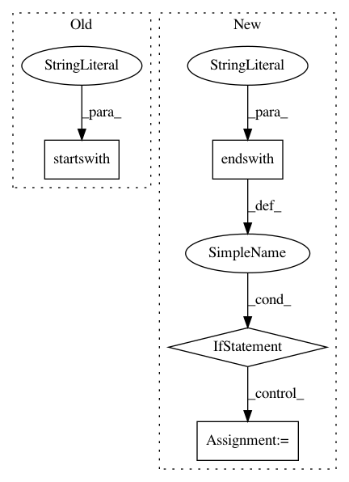

6a968dc9a3faad2037bfd1a8f12b038a368eee4d,spynnaker/pyNN/models/neuron/abstract_population_vertex.py,AbstractPopulationVertex,initial_values,#AbstractPopulationVertex#,651
Before Change
results = dict()
all_methods = dir(self._neuron_model)
for method in all_methods:
if method.startswith("initialize_"):
variable = method[11:]
key = "%s_init" % variable
if hasattr(self._neuron_model, key):
After Change
A dict containing the initial values of the state variables.
results = dict()
for variable_init in self.none_pynn_default_parameters:
if variable_init.endswith("_init"):
variable = variable_init[:-5]
else:
variable = variable_init
results[variable] = getattr(self._neuron_model, variable_init)
return results
In pattern: SUPERPATTERN
Frequency: 3
Non-data size: 4
Instances
Project Name: SpiNNakerManchester/sPyNNaker
Commit Name: 6a968dc9a3faad2037bfd1a8f12b038a368eee4d
Time: 2018-02-20
Author: christian.brenninkmeijer@manchester.ac.uk
File Name: spynnaker/pyNN/models/neuron/abstract_population_vertex.py
Class Name: AbstractPopulationVertex
Method Name: initial_values
Project Name: UFAL-DSG/tgen
Commit Name: 4c5d700944d97e5073e89479153740b3cbe7ea58
Time: 2017-03-31
Author: o.dusek@hw.ac.uk
File Name: tgen/data.py
Class Name: DAI
Method Name: parse
Project Name: mynlp/ccg2lambda
Commit Name: 66a06524eba0b22d14204baeb2ca6d4c9db7d1d0
Time: 2017-05-12
Author: pascual@nii.ac.jp
File Name: scripts/semantic_types.py
Class Name:
Method Name: convert_coq_to_nltk_type